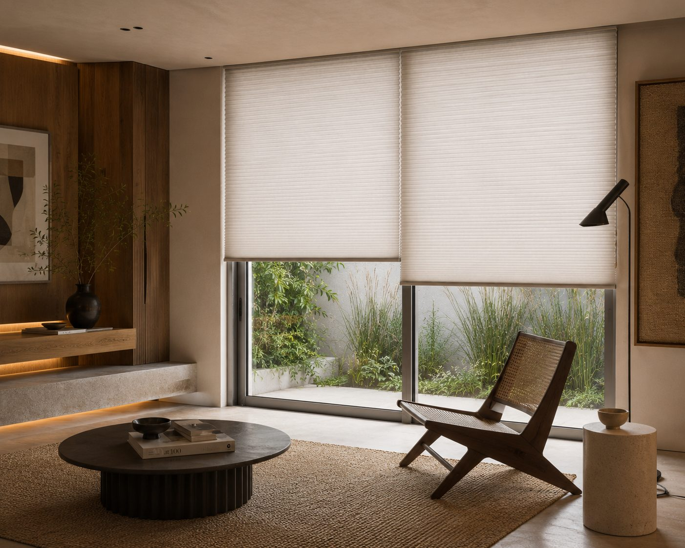
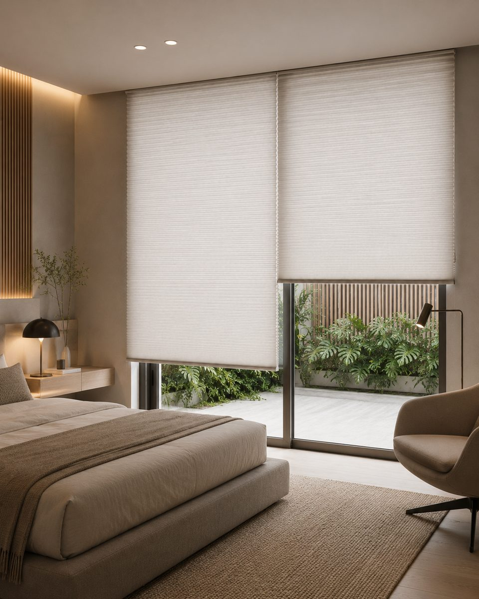
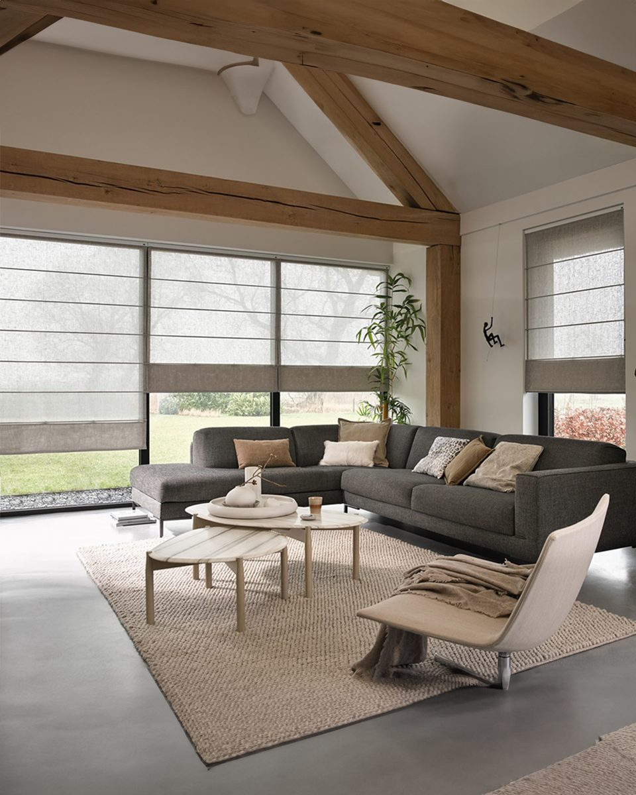
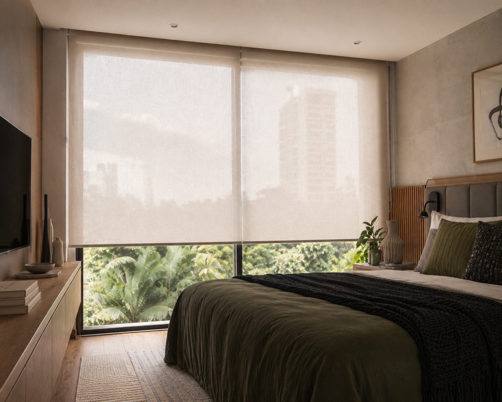
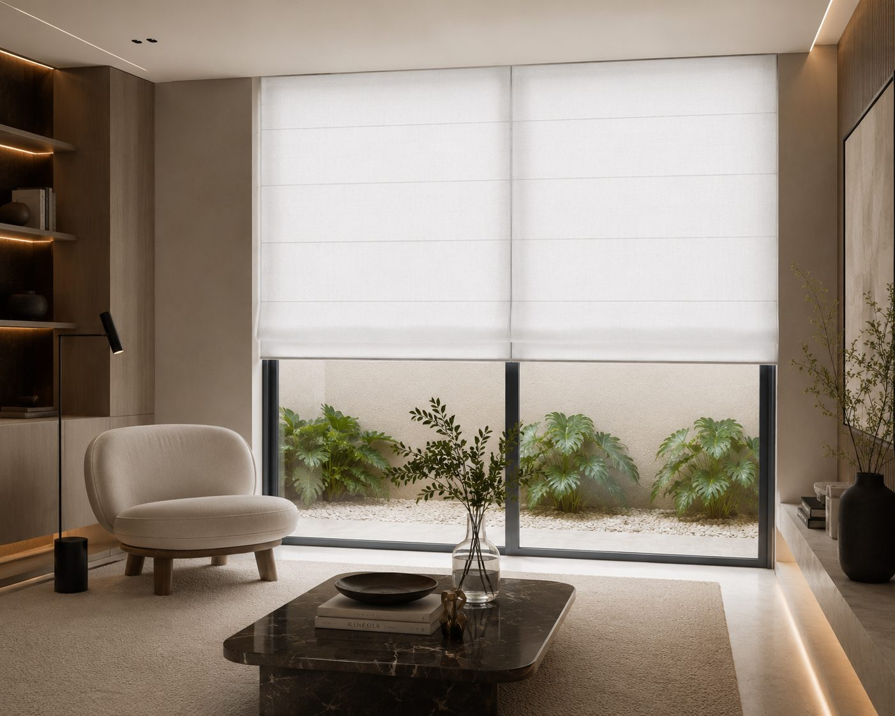

Cortinas e persianas sob medida
Consultoria personalizada para escolher a cortina ou persiana ideal — com orientação sobre tecidos, luz, privacidade, medidas e instalação, do primeiro contato ao acabamento final.
17 anos de experiência · Nova Lima e região
Projetos e possibilidades
Projetos executados pela LR Cortinas e referências dos nossos fornecedores. Toque em uma foto para ampliar.
Automação
Persianas e cortinas motorizadas trazem conforto ao dia a dia: controle pelo aplicativo, comando de voz ou controle remoto, sem esforço e sem marcar o tecido com o manuseio diário.
Persiana automatizada · projeto executado pela LR Cortinas

O desafio
Tecidos, modelos, medidas, luz, privacidade, instalação. São muitas decisões — e quase sempre elas chegam justamente quando a obra ou a mudança já está consumindo todo o seu tempo.
O resultado costuma ser o mesmo: escolhas apressadas, medidas erradas e um ambiente que nunca ficou como você imaginava.
A consultoria da LR Cortinas existe para inverter essa lógica: primeiro entendemos o seu ambiente e a sua rotina, depois apresentamos as opções que fazem sentido.
O que você ganha
01
Você recebe orientação para definir tecidos, cores, modelos e acabamentos de acordo com o seu estilo e o uso de cada espaço.
02
A recomendação considera a luz natural, a necessidade de privacidade e o conforto desejado para cada ambiente.
03
O acompanhamento ajuda a reduzir erros de medida, ajustes de última hora e retrabalho.
04
O processo se adapta à etapa do seu projeto e à sua rotina.
05
Conheça opções de tecidos, cores e persianas que valorizam o ambiente sem abrir mão da funcionalidade.
Vamos conversar?
Chamar no WhatsAppPor que a LR Cortinas
Experiência acumulada em projetos residenciais e comerciais para orientar cada decisão com mais segurança.
Você conhece as possibilidades, entende os prós e contras e decide o que faz sentido para o seu ambiente.
Orientação clara para facilitar suas escolhas, sem complicar a sua rotina.
Materiais e acabamentos selecionados com fornecedores já conhecidos pelo mercado e pela equipe.

Como funciona

Etapa 01
Acompanhamos a evolução do projeto, conferimos medidas e orientamos sobre a instalação de trilhos e suportes no momento adequado, antes das etapas finais da obra.
Etapa 02
Agendamos a visita e a instalação em um dia e horário combinados. O processo é organizado para que você possa renovar o ambiente com mais praticidade.
Etapa 03
Depois de entender o seu espaço e suas necessidades, apresentamos as opções mais adequadas, alinhamos o projeto e organizamos os próximos passos com você.
Dúvidas frequentes
A consultoria foi pensada justamente para isso. Apresentamos opções técnicas e estéticas, explicamos os prós e contras e ajudamos você a decidir no seu tempo.
Sim. Quanto antes entendermos a etapa da obra, melhor podemos orientar sobre medidas, trilhos, suportes e o momento mais adequado para a instalação.
O atendimento é organizado conforme a sua disponibilidade. Com data e horário alinhados, a instalação é planejada para acontecer com praticidade.
Fale com a equipe pelo WhatsApp, conte sobre o seu ambiente e receba as orientações iniciais para entender os próximos passos.

Próximo passo
Conte como é o seu espaço e receba orientação personalizada para escolher a cortina ou persiana ideal — com atendimento em Nova Lima e região.